- Selectores Básicos
Los selectores de tipo pueden tener espacios de nombres cuando se usa @namespace. Esto es útil cuando se trata de documentos que contienen varios espacios de nombres, como HTML5 con SVG en línea o MathML, o XML que mezcla varios vocabularios.
ns|h1- coincide con < h1 > elementos en el espacio de nombres ns
*|h1- coincide con todos los < h1 > elementos
|h1- coincide con todos los < h1 >elementos sin ningún espacio de nombres declarado
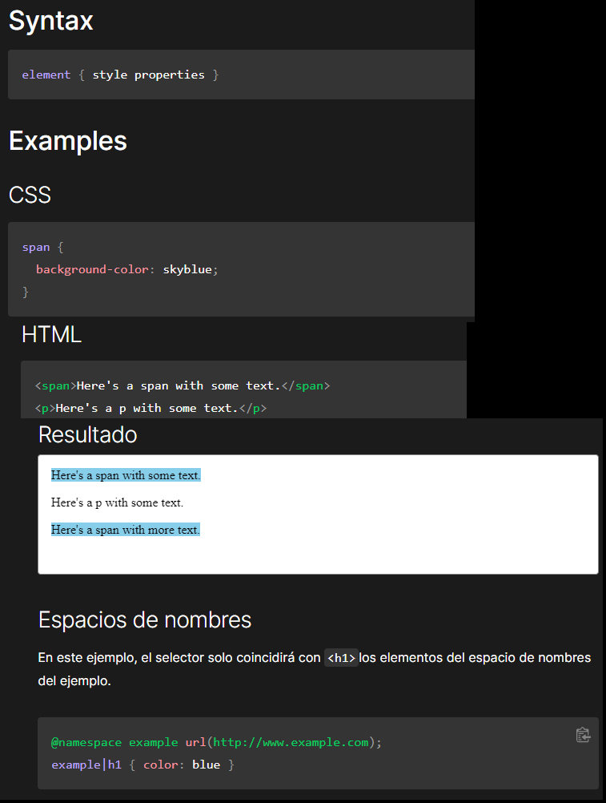
El selector de clase CSS coincide con los elementos en función del contenido de su atributo.class
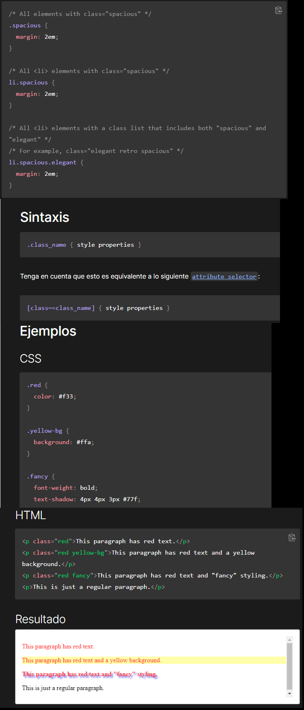
El selector de ID de CSS coincide con un elemento en función del valor del idatributo del elemento. Para que el elemento sea seleccionado, su idatributo debe coincidir exactamente con el valor dado en el selector.
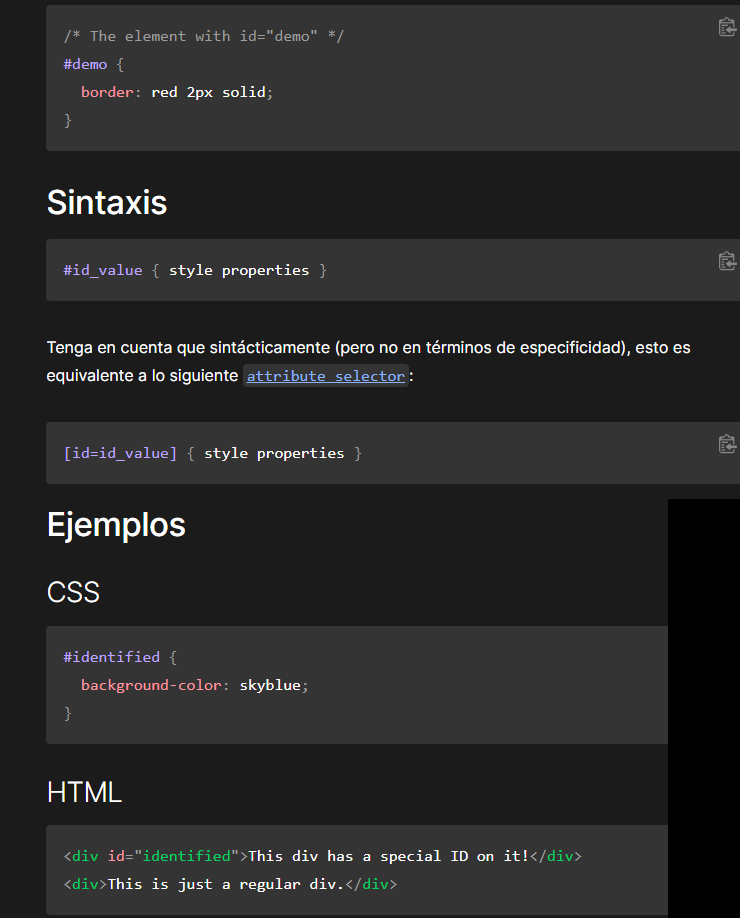
El selector universal CSS ( *) coincide con elementos de cualquier tipo.
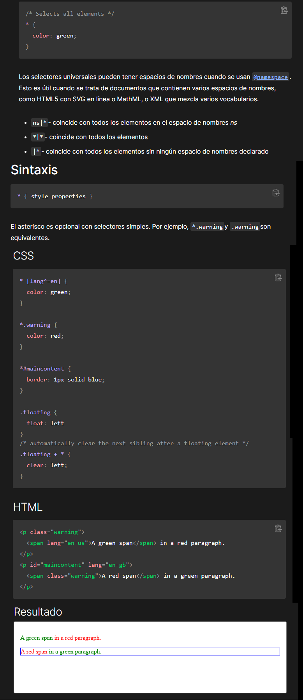
El selector de atributos de CSS coincide con los elementos en función de la presencia o el valor de un atributo dado.
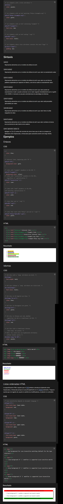
- Combinadores
Se hace referencia a este selector como selector adyacente o selector del próximo hermano. Sólo seleccionará un elemento especificado que esté inmediatamente después de otro elemento especificado.
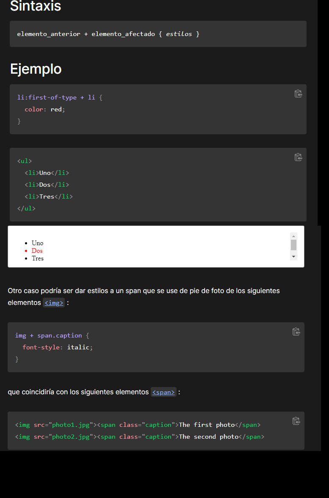
El combinador hermanos generales ~ separa dos selectores y selecciona el segundo elemento sólo si está precedido por el primero y ambos comparten un padre común.
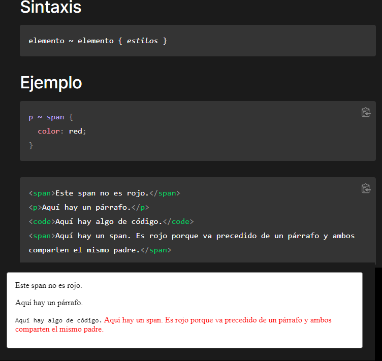
El combinador de hijo > separa a dos selectores y busca solo a los elementos que coindicen con el segundo selector y que son hijos directos del primero. EN contraste, cuando se combinan dos selectores con el selector de descendiente, la expresión busca elementos que coinciden con el segundo selector y que tienen algun ancestro que coindice con el primero, sin importar el nivel de separación que tengan dentro del DOM.
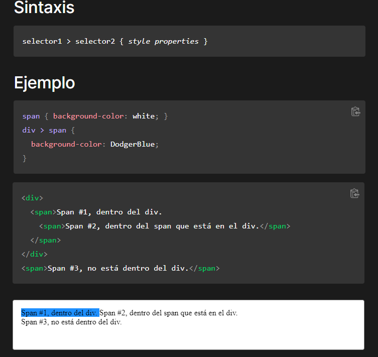
El ␣ combinador descendientes (que se supone que representan un espacio, o mejor dicho uno o más espacios en blanco) combina dos selectores tales que el selector combinado incluye sólo los elementos que coinciden con el segundo selector para los que hay un elemento ancestro que coincide con el primer selector. Los selectores descendientes son similares a selectores hijos , pero que no requieren que la relación entre los elementos coincidentes ser estrictamente entre padres e hijos.
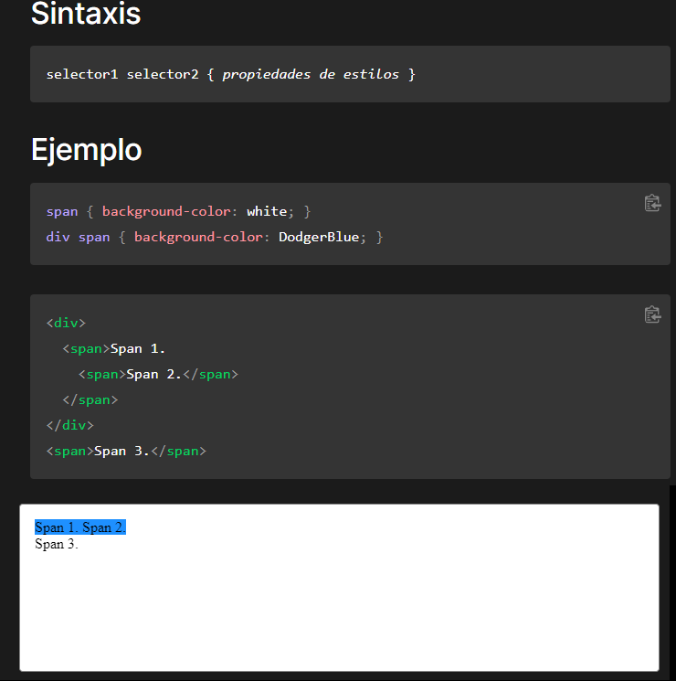
- Pseudoclases
Una pseudoclase CSS es una palabra clave que se añade a los selectores y que especifica un estado especial del elemento seleccionado. Por ejemplo, :hover aplicará un estilo cuando el usuario haga hover sobre el elemento especificado por el selector.
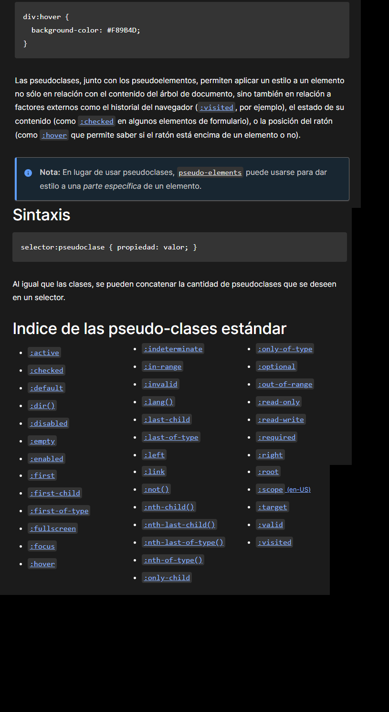
- Pseudoelementos
Al igual que las pseudo-classes, los pseudo-elementos se añaden a los selectores, pero en cambio, no describen un estado especial sino que, permiten añadir estilos a una parte concreta del documento. Por ejemplo, el pseudoelemento ::first-line selecciona solo la primera línea del elemento especificado por el selector.
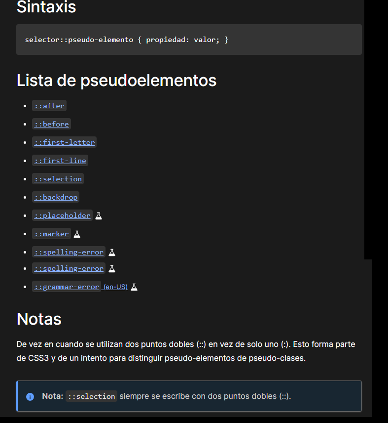